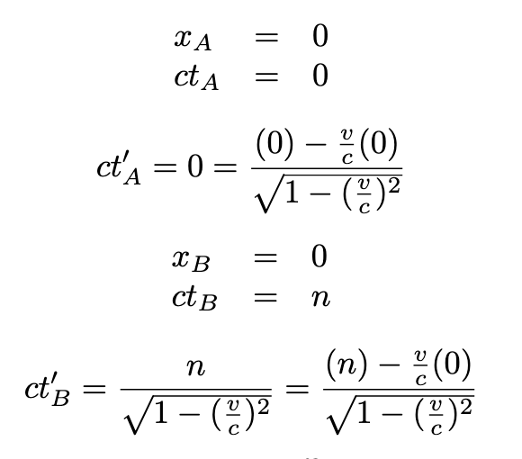
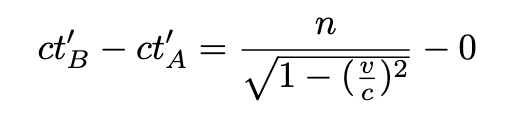

Previously, we briefly discussed how the ct and ct’ axes are not the same (unless v=0). To elaborate further on that idea, let’s select events A and B such that that event A occurs for K at ct=0, x=0, and event B occurs at ct=n, x=0. We can use Lorentz transformations to get the corresponding co-ordinates for the two events from perspective K':
And only a simple subtraction is needed to get the change in time:
Depicted below is an interactive diagram. For the sake of simplicity, B is only shown at ct=1. Notice that when v=0, the two graphs are the same (meaning that time-length is preserved).
v/c = -0.5Δx' (K') =
Δct' (K') =
spacetime distance (K) =
spacetime distance (K') =